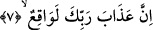

satır satır dizili olarak belirttiği şeyle de mushaflara kasemde bulunmuştur. Bu kasemler
sevgiliden maşukuna yapılan en üst seviyede muhabbet hitaplarıdır.
Üstadım Kitâb-ı lâihât-ı berkiyyât’ında burayı şu şekilde tefsir ediyor: “Tûr’a kasem
olsun” demek; her şeyden mücerred olan zât-ı ahadiyet-i ferdiye hüviyetinin ve her
şeyden mutlak surette müstağni olan hakikat-ı cem’iyenin Tûr’u (dağı) sayılan zât’a
kasem olsun, demektir. “Kitab’a kasem olsun” demek; kendisinde zât-ı kemâliye-i
vücûdiye ve imkâniyenin işleriyle ilgili harflerin yazıldığı, vücub ve imkân ilminin
celâl ve cemâline âid a’yân kelimelerini mündemiç, âyât-ı ervâh ile mücerred kahr ve
lûtuf ukûlunun ve hakikat sûrelerinin yanı sıra uzak ve yakın canlı teşbih tasvirlerinin
bulunduğu kitap olan Kur’ân’a yemin edilmektedir. “İnce deri üzerine yazılmış” demek;
Rahmânî nefis ve Rabbânî emir üzerine yazılmış; “yayılmış”dan murad da mümkinâtın
mâhiyetleri ve mevcudâtın hakikatlerinin üzerinde yayılmış olan şeylerdir. Bunlar da
evvelâ feyz-i akdes ve tecellî-i zâtî ile âyân-ı mücerredât ve sûret-i mümesselât
üzerinde yayılı bulunan ve netice olarak taayyûnât ve zuhûrât külliyâtı ile ikinci
aşamada feyz-i mukaddes ve tecellî-i sıfâtî ile ef’âlî tecellînin gerçekleştiği; bununla da
teşahhusî ve temeyyüzî cüz’iyyâtın, Kur’ân’ın, bütün hurûf, kelimât, âyât ve sûreleri ile
lafz-ı resmî olan Furkân’ın teşekkül ettiği ortaya çıkmaktadır. Zîrâ Allah, “Ona
vahyedilen sadece bir öğüt ve apaçık bir Kur’an’dır” (Yâsîn 36/69) buyuruyor. Bu
Kur’an da zâhiren insan eliyle yazılmış ve dizilmiş olmasına rağmen gerçekte Yaratıcı
Teâlâ’nın kudreti ile yazdırılmış ve dizdirilmiştir. Bu nedenle mutlak olarak hadesten
temizlenmeyenlerin/abdestsizlerin dokunamaması açısından Kur’ân’a karşı son derece
tâzim ve tekrim şarttır. İlâhî damgalı kitabı tefekkürden uzak kalan, ona tâzim ve vakar
ile yönelmekten istiğnâ eden, hakîkî olan bu ilâhî kitaptan gâfil olup tâzim ve tekrimde
ihmâlde bulunan ve daha da ileri giderek onu hafife ve alaya alanlara yazıklar olsun.
Bilâkis ilâhî damgalı bu kitabı tefekkürden uzak kalmayıp gereken saygı ve tâzimi
gösteren, bunlardan herhangi birini ihmal etmeyen ve hattâ her birine karşı şerîatın
bunlara ittiba husûsundaki emrine uymak için tâzim ve tekrîmi elden bırakmayan,
Kur’ân’ın ve Furkân-ı Vücûdî’nin haram kıldığı hakikatlere boyun eğmek ve her rüknün
edâsını yerine getirmek için, Allah tarafından her vahyolunan emrin gereğini yapmak,
her makamda adâlet ve insafla davranmak, her halükârda zulüm ve baskıdan yüz
çevirmek için Kur’an yoluna inkiyâd edenlere ne mutlu!...
Fakir (Bursevî) derim ki, üstadımın bu Kitâb-ı lâihât-ı berkiyyât isimli eserinde
âyette geçen “kitap” konusunda hakikî ve mecazî yönlerden aslında çok geniş yorumlar
mevcuddur. Bu yüzden burada makama uygun olması hasebiyle bir kısmı ile
yetinilmiştir. Bütün taleplerin kendisine yöneltildiği Allah Teala’dan, üstadımın ilm-i
nâfiinden bizleri faydalandırmasını dileriz.